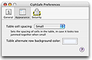

Setting Appearance Preferences in CiphSafe
The Appearance preferences pane lets you configure how CiphSafe looks.
- The "Table cell spacing" pop-up menu lets you configure the spacing used around the cells of the table. When the table appears to be very crammed, try a larger spacing to see which looks best.
- The "Table alternate row background color" allows you to select a color for the background of alternate rows (the color that isn't white, and usually light blue). If the usual white/blue scheme is boring, change the color here. For those curious, use a red of 237, green of 242, and blue of 255 for the default light blue.
